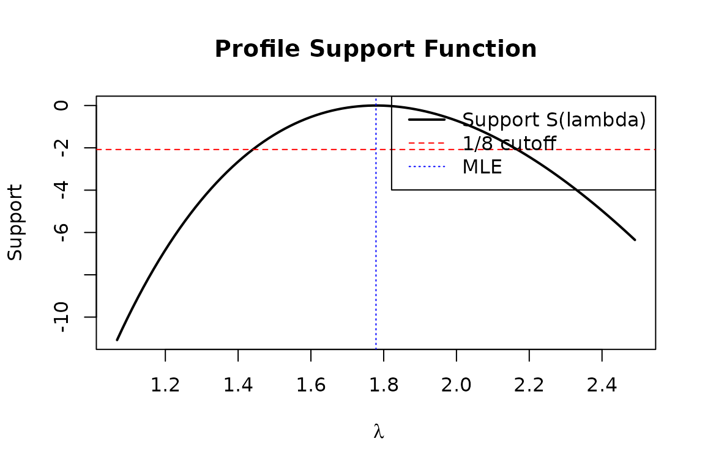

The exponential_lifetime model is a reference
implementation demonstrating how to build a specialized likelihood model
with:
fit() method
computes the MLE directly as
,
bypassing optim entirely.rdata() method: For Monte Carlo
validation and bootstrap studies.The log-likelihood for Exponential() data with right-censoring is:
where is the number of exact (uncensored) observations and is the total observation time (sum of all times, whether censored or not).
The simplest case: all observations are exact.
set.seed(42)
true_lambda <- 2.5
df <- data.frame(t = rexp(200, rate = true_lambda))
model <- exponential_lifetime("t")
assumptions(model)
#> [1] "independent" "identically distributed"
#> [3] "exponential distribution"Unlike most models that require optim, the exponential
model computes the MLE directly. No initial guess is needed:
mle <- fit(model)(df)
cat("MLE:", coef(mle), "(true:", true_lambda, ")\n")
#> MLE: 2.159 (true: 2.5 )
cat("SE:", se(mle), "\n")
#> SE: 0.1527
cat("95% CI:", confint(mle)[1, ], "\n")
#> 95% CI: 1.86 2.458
cat("Score at MLE:", score_val(mle), "(exactly zero by construction)\n")
#> Score at MLE: 0 (exactly zero by construction)In reliability and survival analysis, observations are often right-censored: we know the item survived past a certain time, but not when it actually failed.
set.seed(42)
true_lambda <- 2.0
censor_time <- 0.5
# Generate latent failure times
x <- rexp(300, rate = true_lambda)
censored <- x > censor_time
df_cens <- data.frame(
t = pmin(x, censor_time),
status = ifelse(censored, "right", "exact")
)
cat("Sample size:", nrow(df_cens), "\n")
#> Sample size: 300
cat("Censoring rate:", round(mean(censored) * 100, 1), "%\n")
#> Censoring rate: 41.7 %
cat("Exact observations (d):", sum(!censored), "\n")
#> Exact observations (d): 175
cat("Total time (T):", round(sum(df_cens$t), 2), "\n")
#> Total time (T): 100.8
model_cens <- exponential_lifetime("t", censor_col = "status")
assumptions(model_cens)
#> [1] "independent" "identically distributed"
#> [3] "exponential distribution" "non-informative right censoring"
mle_cens <- fit(model_cens)(df_cens)
cat("\nMLE:", coef(mle_cens), "(true:", true_lambda, ")\n")
#>
#> MLE: 1.737 (true: 2 )
cat("SE:", se(mle_cens), "\n")
#> SE: 0.1313
cat("95% CI:", confint(mle_cens)[1, ], "\n")
#> 95% CI: 1.48 1.994A common mistake is to treat censored times as if they were exact observations. This biases the rate estimate upward (equivalently, the mean lifetime downward):
# Wrong: treat all observations as exact
model_wrong <- exponential_lifetime("t")
mle_wrong <- fit(model_wrong)(df_cens)
cat("Comparison:\n")
#> Comparison:
cat(" True lambda: ", true_lambda, "\n")
#> True lambda: 2
cat(" MLE (correct): ", coef(mle_cens), "\n")
#> MLE (correct): 1.737
cat(" MLE (ignoring censor):", coef(mle_wrong), "\n")
#> MLE (ignoring censor): 2.978
cat("\nIgnoring censoring overestimates the failure rate!\n")
#>
#> Ignoring censoring overestimates the failure rate!The model provides score and Hessian in closed form, which we can verify against numerical differentiation:
set.seed(99)
df_small <- data.frame(t = rexp(50, rate = 3))
model_small <- exponential_lifetime("t")
lambda_test <- 2.5
# Analytical score
score_fn <- score(model_small)
analytical_score <- score_fn(df_small, lambda_test)
# Numerical score (via numDeriv)
ll_fn <- loglik(model_small)
numerical_score <- numDeriv::grad(
function(p) ll_fn(df_small, p), lambda_test
)
cat("Score at lambda =", lambda_test, ":\n")
#> Score at lambda = 2.5 :
cat(" Analytical:", analytical_score, "\n")
#> Analytical: 1.889
cat(" Numerical: ", numerical_score, "\n")
#> Numerical: 1.889
cat(" Match:", all.equal(unname(analytical_score), numerical_score), "\n")
#> Match: TRUE
# Analytical Hessian
hess_fn <- hess_loglik(model_small)
analytical_hess <- hess_fn(df_small, lambda_test)
numerical_hess <- numDeriv::hessian(
function(p) ll_fn(df_small, p), lambda_test
)
cat("\nHessian at lambda =", lambda_test, ":\n")
#>
#> Hessian at lambda = 2.5 :
cat(" Analytical:", analytical_hess[1, 1], "\n")
#> Analytical: -8
cat(" Numerical: ", numerical_hess[1, 1], "\n")
#> Numerical: -8
cat(" Match:", all.equal(analytical_hess[1, 1], numerical_hess[1, 1]), "\n")
#> Match: TRUEThe expected Fisher information for Exponential() is . The model provides this analytically:
fim_fn <- fim(model_small)
n_obs <- nrow(df_small)
lambda_hat <- coef(fit(model_small)(df_small))
fim_analytical <- fim_fn(lambda_hat, n_obs)
cat("FIM at MLE (lambda =", lambda_hat, "):\n")
#> FIM at MLE (lambda = 2.761 ):
cat(" Analytical n/lambda^2:", n_obs / lambda_hat^2, "\n")
#> Analytical n/lambda^2: 6.56
cat(" fim() result: ", fim_analytical[1, 1], "\n")
#> fim() result: 6.56
cat(" Match:", all.equal(n_obs / unname(lambda_hat)^2, fim_analytical[1, 1]), "\n")
#> Match: TRUEThe package supports pure likelihood-based inference. Instead of confidence intervals (which make probability statements about parameters), likelihood intervals identify the set of parameter values that are “well supported” by the data.
set.seed(42)
df_fish <- data.frame(t = rexp(100, rate = 2.0))
model_fish <- exponential_lifetime("t")
mle_fish <- fit(model_fish)(df_fish)
# Support function: S(lambda) = logL(lambda) - logL(lambda_hat)
# Support at MLE is always 0
s_mle <- support(mle_fish, coef(mle_fish), df_fish, model_fish)
cat("Support at MLE:", s_mle, "\n")
#> Support at MLE: 0
# At a different value, support is negative
s_alt <- support(mle_fish, c(lambda = 1.5), df_fish, model_fish)
cat("Support at lambda=1.5:", s_alt, "\n")
#> Support at lambda=1.5: -1.375
# Relative likelihood: R(lambda) = L(lambda)/L(lambda_hat) = exp(S)
rl_alt <- relative_likelihood(mle_fish, c(lambda = 1.5), df_fish, model_fish)
cat("Relative likelihood at lambda=1.5:", rl_alt, "\n")
#> Relative likelihood at lambda=1.5: 0.253A 1/k likelihood interval contains all where . The 1/8 interval is roughly analogous to a 95% confidence interval:
li <- likelihood_interval(mle_fish, df_fish, model_fish, k = 8)
print(li)
#> 1/8 Likelihood Interval (R >= 0.125)
#> -----------------------------------
#> lower upper
#> lambda 1.44 2.167
#> attr(,"k")
#> [1] 8
#> attr(,"relative_likelihood_cutoff")
#> [1] 0.125
cat("\nWald 95% CI for comparison:\n")
#>
#> Wald 95% CI for comparison:
print(confint(mle_fish))
#> 2.5% 97.5%
#> lambda 1.43 2.128
prof <- profile_loglik(mle_fish, df_fish, model_fish, param = 1, n_grid = 100)
plot(prof$lambda, prof$support, type = "l", lwd = 2,
xlab = expression(lambda), ylab = "Support",
main = "Profile Support Function")
abline(h = -log(8), lty = 2, col = "red")
abline(v = coef(mle_fish), lty = 3, col = "blue")
legend("topright",
legend = c("Support S(lambda)", "1/8 cutoff", "MLE"),
lty = c(1, 2, 3), col = c("black", "red", "blue"), lwd = c(2, 1, 1))
rdata()
The rdata() method generates synthetic data from the
model, enabling Monte Carlo studies. Here we verify that the MLE is
unbiased and that the asymptotic standard error matches the empirical
standard deviation:
set.seed(42)
true_lambda <- 3.0
n_obs <- 100
n_sim <- 1000
model_mc <- exponential_lifetime("t")
gen <- rdata(model_mc)
# Simulate n_sim datasets and fit each
mle_vals <- replicate(n_sim, {
sim_df <- gen(true_lambda, n_obs)
coef(fit(model_mc)(sim_df))
})
cat("Monte Carlo results (", n_sim, "simulations, n=", n_obs, "):\n")
#> Monte Carlo results ( 1000 simulations, n= 100 ):
cat(" True lambda: ", true_lambda, "\n")
#> True lambda: 3
cat(" Mean of MLEs: ", mean(mle_vals), "\n")
#> Mean of MLEs: 3.038
cat(" Bias: ", mean(mle_vals) - true_lambda, "\n")
#> Bias: 0.03775
cat(" Empirical SE: ", sd(mle_vals), "\n")
#> Empirical SE: 0.3182
cat(" Theoretical SE: ", true_lambda / sqrt(n_obs), "\n")
#> Theoretical SE: 0.3
cat(" (SE = lambda/sqrt(n) from Fisher information)\n")
#> (SE = lambda/sqrt(n) from Fisher information)likelihood_name("exp")
The analytical model should produce the same log-likelihood as the generic distribution-wrapping approach:
set.seed(42)
df_cv <- data.frame(t = rexp(100, rate = 2.0))
model_analytical <- exponential_lifetime("t")
model_generic <- likelihood_name("exp", ob_col = "t",
censor_col = "censor")
# Need a censor column for likelihood_name
df_cv_generic <- data.frame(t = df_cv$t, censor = rep("exact", 100))
lambda_test <- 2.3
ll_analytical <- loglik(model_analytical)(df_cv, lambda_test)
ll_generic <- loglik(model_generic)(df_cv_generic, lambda_test)
cat("Log-likelihood at lambda =", lambda_test, ":\n")
#> Log-likelihood at lambda = 2.3 :
cat(" Analytical model:", ll_analytical, "\n")
#> Analytical model: -46
cat(" Generic model: ", ll_generic, "\n")
#> Generic model: -46
cat(" Match:", all.equal(ll_analytical, ll_generic), "\n")
#> Match: TRUEThe exponential_lifetime model demonstrates several
design patterns available in the likelihood.model
framework:
| Feature | How it’s implemented |
|---|---|
| Closed-form MLE | Override fit() to return fisher_mle
directly |
| Analytical derivatives | Implement score(), hess_loglik(),
fim()
|
| Right-censoring | Sufficient statistics handle censoring naturally |
| Data generation |
rdata() method for Monte Carlo validation |
| Fisherian inference | Works out of the box via support(),
likelihood_interval(), etc. |
These patterns apply to any distribution where you want tighter
integration than likelihood_name() provides. See
weibull_uncensored for another example with analytical
derivatives (but without a closed-form MLE).
sessionInfo()
#> R version 4.5.2 (2025-10-31)
#> Platform: x86_64-pc-linux-gnu
#> Running under: Ubuntu 24.04.3 LTS
#>
#> Matrix products: default
#> BLAS: /usr/lib/x86_64-linux-gnu/openblas-pthread/libblas.so.3
#> LAPACK: /usr/lib/x86_64-linux-gnu/openblas-pthread/libopenblasp-r0.3.26.so; LAPACK version 3.12.0
#>
#> locale:
#> [1] LC_CTYPE=C.UTF-8 LC_NUMERIC=C LC_TIME=C.UTF-8
#> [4] LC_COLLATE=C.UTF-8 LC_MONETARY=C.UTF-8 LC_MESSAGES=C.UTF-8
#> [7] LC_PAPER=C.UTF-8 LC_NAME=C LC_ADDRESS=C
#> [10] LC_TELEPHONE=C LC_MEASUREMENT=C.UTF-8 LC_IDENTIFICATION=C
#>
#> time zone: UTC
#> tzcode source: system (glibc)
#>
#> attached base packages:
#> [1] stats graphics grDevices utils datasets methods base
#>
#> other attached packages:
#> [1] likelihood.model_0.9.1
#>
#> loaded via a namespace (and not attached):
#> [1] cli_3.6.5 knitr_1.51 rlang_1.1.7
#> [4] xfun_0.56 generics_0.1.4 textshaping_1.0.4
#> [7] jsonlite_2.0.0 htmltools_0.5.9 ragg_1.5.0
#> [10] sass_0.4.10 rmarkdown_2.30 evaluate_1.0.5
#> [13] jquerylib_0.1.4 MASS_7.3-65 fastmap_1.2.0
#> [16] numDeriv_2016.8-1.1 yaml_2.3.12 mvtnorm_1.3-3
#> [19] lifecycle_1.0.5 algebraic.mle_0.9.0 compiler_4.5.2
#> [22] codetools_0.2-20 fs_1.6.6 algebraic.dist_0.1.0
#> [25] systemfonts_1.3.1 digest_0.6.39 R6_2.6.1
#> [28] bslib_0.10.0 tools_4.5.2 boot_1.3-32
#> [31] pkgdown_2.2.0 cachem_1.1.0 desc_1.4.3